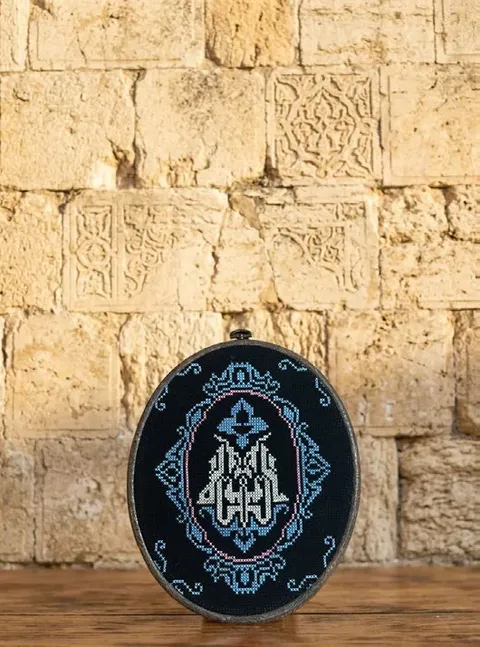

About us
Dâr means home
In Palestinian Arabic, dâr is the home. That is where our name comes from: a space in Istanbul that keeps Palestinian culture and traditions alive, builds bridges between cultures, and supports the economic independence of Palestinian women.
Here we show handmade pieces, traditional dress, embroidery and cultural symbols, many of them made by women in conflict areas, especially Gaza.
- 01
Supporting Palestinian craftswomen and craftsmenHandwork that reaches people who value it
- 02
Heritage made to today's standardsTraditional pieces that fit life today
- 03
Keeping cultural memory alive by makingEvery piece carries a motif and a story
- 04
Heritage lived by people and organisationsFor the home, as a gift, or for a formal occasion